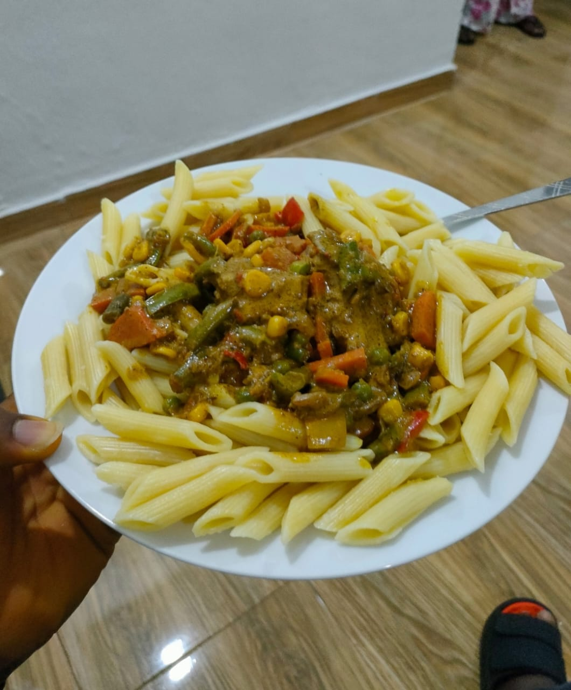

About My Cooking
Cooking is one of my favorite hobbies. I love trying out new recipes, experimenting with different ingredients, and creating delicious dishes for my friends and family to enjoy.
My Favorite Recipe
Here is a photo of one of my favorite dish that I like to cook. It's a vegetables sauce and Macroni, and it's always a hit with my friends and family.
Watch Me Cook Banga Soup
Check out this video of me cooking Banga Soup. You can see how I prepare the ingredients and put everything together to create a delicious Banga Soup, though the video is not complete.
My Cooking Equipment
| Item | Description |
|---|---|
| Chef's Knife | A sharp and sturdy knife for chopping vegetables and meat |
| Blender | Used for blending ingredients such as smoothies, soups, and sauces |
| Pots and pans | Used for cooking and heating food on a stovetop or in an oven |
| Grater | Used for shredding or grating cheese, vegetables, and other food items. |
| Oven | Used for baking, roasting, and broiling food items. |
These are some of the essential items I use for cooking. Of course, there are many more tools and appliances that can be useful, depending on what you like to cook.
Connect with Me
If you want to learn more about my cooking recipe, check out my social media pages for my latest recipes and tips for cooking healthy and delicious meals.
Follow me on Instagram